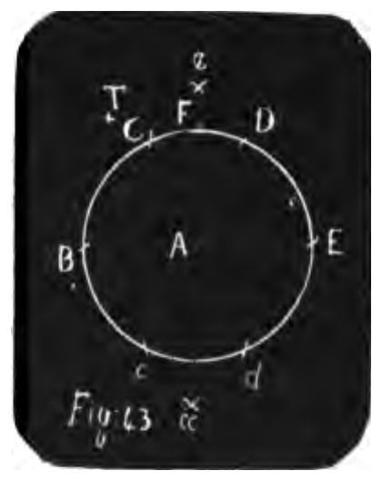
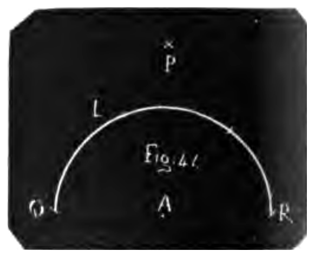

§§ 100–103: Radici dei numeri interi da 1 fino a 10 e fino a 36¶
LIBRO SESTO
DELLE RADICI
100. Prob. Trovare facilmente le radici dei numeri interi dall’uno fino al dieci (fig. 43), prendendo per unità la distanza \(AB\).
Sol. Col raggio \(AB\) si descriva il cerchio \(BDd\); si faccia nella sua circonferenza ad \(AB = BC = CD = DE = Ed = dc\). Coi centri \(B\) ed \(E\), e col raggio \(BD\) si segnino degli archi, che si taglino in \(a\), ed \(\alpha\).
Collo stesso raggio \(BD\), e coi centri \(D\) e \(d\) si segnino due archi, che si taglino in \(V\). Col raggio \(Aa\), e col centro \(B\) si tagli la circonferenza in \(F\). Coi centri \(B\) ed \(F\), e col raggio \(AB\) si segnino due archi, che si taglino in \(T\). Si avrà
Dim. Si è dimostrato essere \((Aa)^2 = 2\) (§ 27). Dunque \(Aa = \sqrt{2}\). Si è dimostrato essere \(BD = \sqrt{3}\) (§ 2). Si ha poi \(BE = 2 = \sqrt{4}\).
Avendo poi i due triangoli \(BTA\), \(TAF\) i lati eguali tra loro; sarà l’angolo \(BTA = TAF\) (8, lib. I). Quindi \(BT\) parallela ad \(FA\) (28, lib. I), e però anche la \(BT\) si troverà perpendicolare a \(BA\), come la \(FA\) (§ 27) (27, lib. I).
Avendo poi il punto \(A\) e il punto \(E\) la stessa distanza dai punti \(D\) e \(d\), così pure il punto \(B\) e il punto \(V\); saranno i quattro punti \(B, A, E, V\) sulla stessa retta (§ 13), e sarà \(EV = BA\) (§ 14).
Sarà dunque \((ET)^2 = (TB)^2 + (BE)^2\) (47, lib. I) \(= (AB)^2 + 4(AB)^2 = 5\); quindi \(ET = \sqrt{5}\). Istessamente \((aV)^2 = (Aa)^2 + (AV)^2\). Ma essendo \(EV = BA\); è ancora \(AV = BE = 2AB\); quindi \((AV)^2 = 4(AB)^2 = 4\); ed è \((Aa)^2 = 2\) (§ 27).


Dunque \((aV)^2 = 6\); ed \(aV = \sqrt{6}\). Confrontando poi i punti \(C, B, c, A, V\) coi punti \(A, p, B, P, Q\) della fig. 3, e fatte le sostituzioni nell’equazione \((AQ)^2 = (Ap)^2 + pQ \cdot PQ\) (§ 18), si otterrà \((CV)^2 = (CB)^2 + BV \cdot AV = 1 + 3 \cdot 2 = 7\). Quindi \(CV = \sqrt{7}\).
Essendo pure \(Aa = A\alpha\) (§ 14); sarà \((a\alpha)^2 = 4(Aa)^2 = 8\). Quindi \(a\alpha = \sqrt{8}\). Si ha poi \(BV = 3 = \sqrt{9}\). Finalmente essendo \((TV)^2 = (TB)^2 + (BV)^2 = 1 + 9 = 10\); si ha \(TV = \sqrt{10}\).
101. Prob. Per via delle radici trovate nel problema precedente (fig. 44), trovare le altre radici de’ numeri interi dal 10 fino al 36.
Sol. Si sottragga il numero, del quale si vuole la radice, dal numero quadrato prossimamente maggiore, che sarà il 16, o il 25, o il 36. Colla radice del residuo, la quale si troverà nella lista del § 100, presa per raggio, e con un centro \(A\) si descriva la semicirconferenza \(QLR\) (§ 64). Colla radice del numero quadrato prossimamente maggiore presa per raggio, la quale si troverà col metodo del § 65, e coi centri \(Q\) ed \(R\) si descrivano due archi, che si taglino in \(P\). Sarà \(AP\) la radice cercata.
Per esempio si voglia la radice del 29. Sottratto questo dal 36, lascia di residuo 7. Col raggio \(CV = \sqrt{7}\) (§ 100) descritta la semicirconferenza \(QLR\), e coi centri \(Q\) ed \(R\), e col raggio \(= 6\) segnati due archi, che si taglino in \(P\); sarà \(AP = \sqrt{29}\).
Dim. Essendo retto l’angolo \(PAQ\) (§ 83); sarà \((PQ)^2 = (AQ)^2 + (AP)^2\) (47, lib. I). Quindi togliendo \((AQ)^2\), si avrà \((PQ)^2 - (AQ)^2 = (AP)^2\). Ora posto \((PQ)^2 = 36\) e \((AQ)^2\) eguale successivamente ai numeri interi dall’unità fino al 10, si avrà \((AP)^2\) eguale successivamente dal 36 in giù fino al 25. Dunque per \(AP\) si avranno successivamente le radici di questi numeri. La radice poi di 25 è 5, e si ha dal § 65. Posto \((PQ)^2 = 25\), si avranno collo stesso metodo le radici dal 25 in giù fino al 16, e posto \((PQ)^2 = 16\), si avranno le altre dal 16 in giù fino al 10.
Nell’esempio addotto si avrà \((PQ)^2 - (AQ)^2 = 36 - 7 = (AP)^2 = 29\). Quindi \(AP = \sqrt{29}\).


102. Prob. Trovare le radici di tutti i numeri interi.
Sol. È chiaro, che adoperando lo stesso metodo del § 101 colle radici acquistate, con esso si potranno avere altre radici di numeri superiori, e con queste altre, e così successivamente sino in infinito. Abbiamo già dunque il modo di ottenere le radici di tutti i numeri interi.
103. Prob. Trovare la radice di qualunque numero rotto.
Sol. Si trovi la radice del denominatore (§ 102), poi quella del numeratore. Si faccia come la prima radice alla seconda, così l’unità ad una quarta proporzionale (§ 93). Sarà questa la radice cercata.
Dim. Poichè se il denominatore sia \(d\); il numeratore sia \(n\); se si farà \(\sqrt{d} : \sqrt{n} :: 1 : \text{quarta proporzionale}\); sarà questa quarta \(= \frac{\sqrt{n}}{\sqrt{d}}\). Ma \(\frac{\sqrt{n}}{\sqrt{d}} = \sqrt{\frac{n}{d}}\). Dunque ecc.